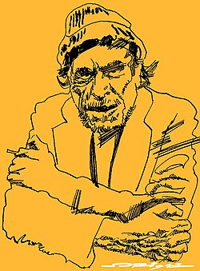

Tumbleweed Words
One piece of flash fiction or poetry.
Free, every week.
“Everyone wears black so hard you don’t notice
there are differing shades.”
Free · Weekly · No spam · Unsubscribe any time
The books keeping me company right now. Five writers. No theme. Just what I reached for.

Bukowski writes like the truth is the only thing left worth saying. These poems don’t perform or posture — they arrive stripped of ceremony, full of the daily wreckage of a life lived on the margins of everything respectable. That’s what I keep coming back to: not the mythology, not the excess, but the extraordinary precision hiding inside all that apparent chaos. He makes compression look effortless. It isn’t.
Baldwin makes you feel the weight of every unspoken thing. Another Country is one of the angriest and most tender novels I’ve read — a book that insists on the full complexity of human love across every line it refuses to draw. Set in New York, it follows the aftermath of a jazz musician’s suicide and the devastation it leaves in the people who loved him. The prose is relentless. It doesn’t let you look away, and it doesn’t want to.
Rooney’s best book. Intermezzo is about grief more than anything — and the strange shapes grief takes in people who don’t know how to hold it. Two brothers, Peter and Ivan, are navigating their father’s death and what it does to them, to their relationships, to the distances between them. The chess sequences are extraordinary. What looks like a novel about love is really a novel about what loss does to the way we reach for people.
Lynch writes in a compressed, almost breathless style — no chapter breaks, sentences that accumulate into something like dread. Prophet Song is set in a near-future Ireland sliding into authoritarianism, following a mother trying to hold her family together as the world around her collapses. The most frightening novel I’ve encountered in years, not because of what happens but because of how completely it places you inside a world coming apart. The horror is recognisable. That’s the point.
James does something formally audacious — it takes one of American literature’s most famous silences and fills it with a voice of extraordinary intelligence and moral weight. A reimagining of Huckleberry Finn told entirely from Jim’s perspective, Everett doesn’t just retell the story from a different angle. He rewrites the terms of what that story was always about. It is funny, it is devastating, and it is a necessary book.
Flash fiction and poetry written from the road. Free to read. No conditions.
Subscribe free →Tumbleweed Words
“Everyone wears black so hard you don’t notice
there are differing shades.”
Free · Weekly · No spam · Unsubscribe any time